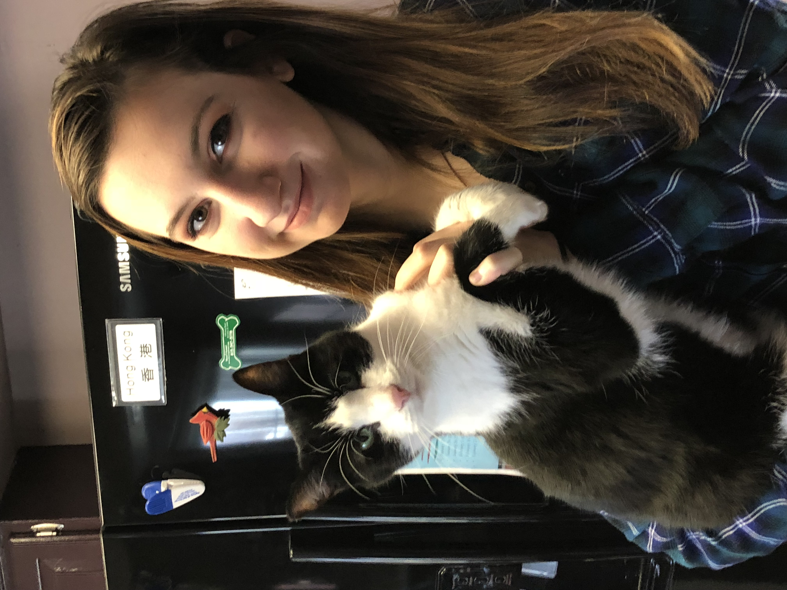

About Me

My name is Dominique Bailey. A couple things I think people should know about me is my love for my family, along with my pets, and my love for bowling.
My family includes my mom, dad, and my two older brothers. I have one giant dog, who is an english mastiff, and I also have 7 cats to to along with my dog. Having so many
pets in the house means that you almost never go out of the house without fur on you and you never eat alone, even if you are the only one in the house. Now, my love for
bowling came along when I was 4 years old, and I have been bowling ever since. My dad taught me how to bowl, and my whole family bowls. The bowling alley feels like a second home
at this point. I bowled for my high school, along with bowling in college. I am a national champion in college bowling with the help of my teammates and I've gained the best friendships
out of my love for bowling.